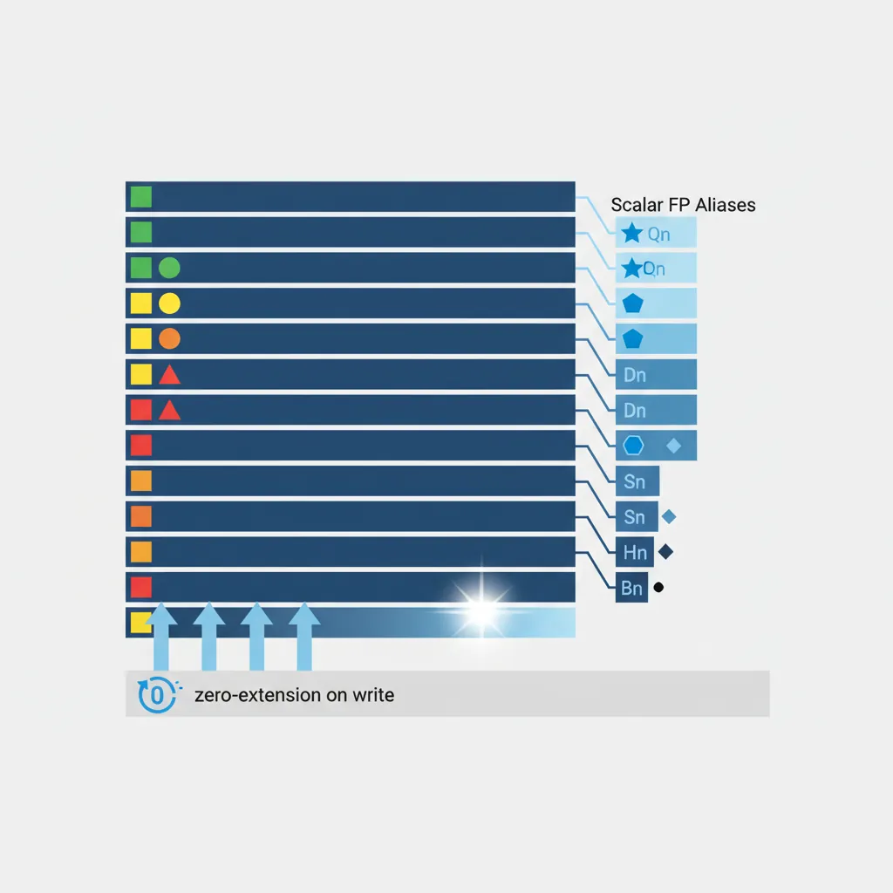
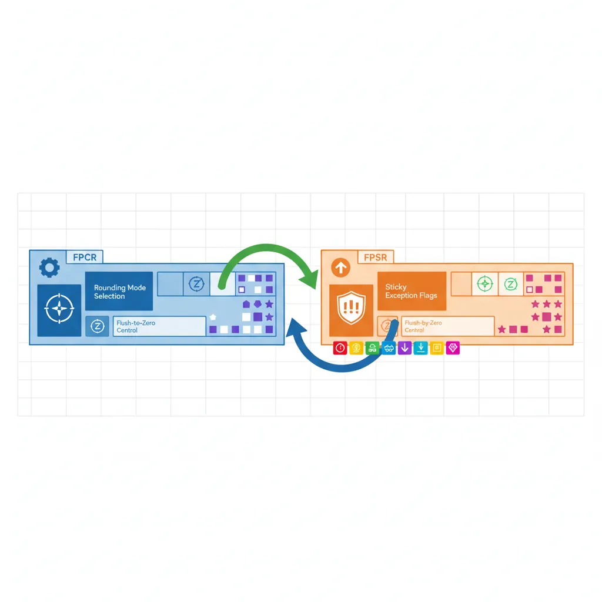
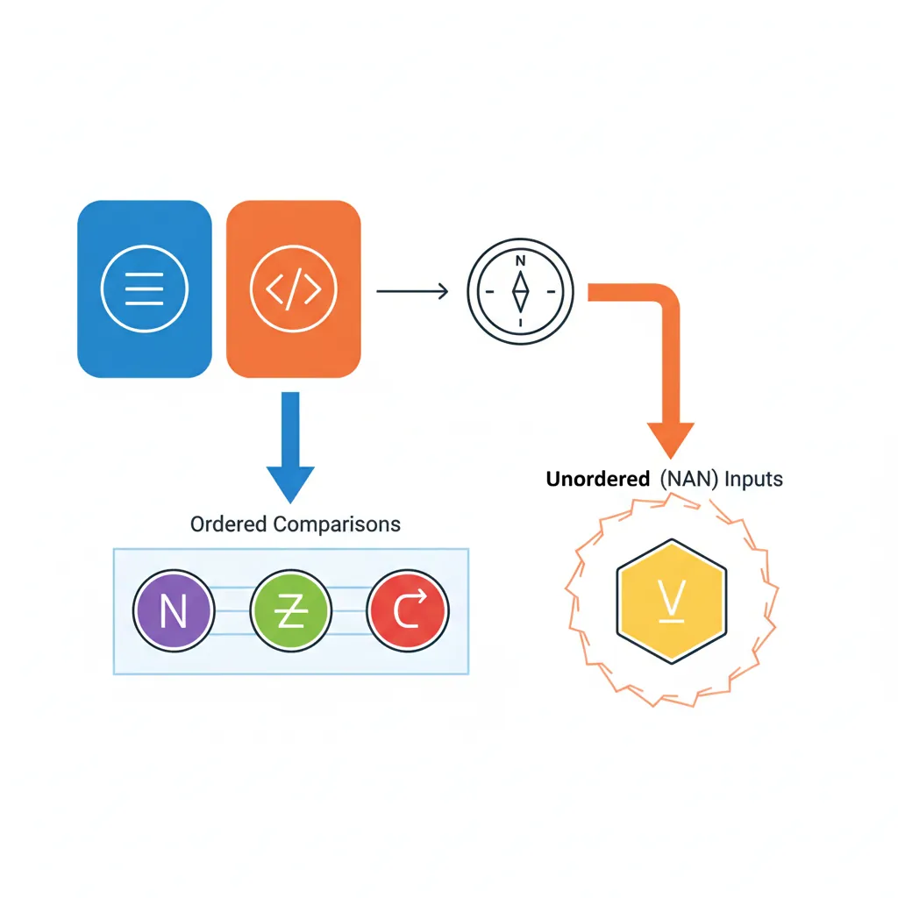
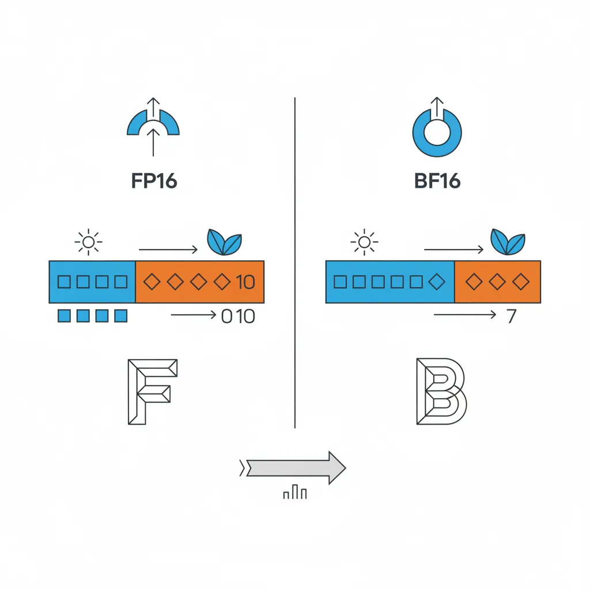

Introduction & Register File
ARM Assembly Mastery
Architecture History & Core Concepts
ARMv1→v9, RISC philosophy, profilesARM32 Instruction Set Fundamentals
ARM vs Thumb, registers, CPSR, barrel shifterAArch64 Registers, Addressing & Data Movement
X/W regs, addressing modes, load/store pairsArithmetic, Logic & Bit Manipulation
ADD/SUB, bitfield extract/insert, CLZBranching, Loops & Conditional Execution
Branch types, link register, jump tablesStack, Subroutines & AAPCS
Calling conventions, prologue/epilogueMemory Model, Caches & Barriers
Weak ordering, DMB/DSB/ISB, TLBNEON & Advanced SIMD
Vector ops, intrinsics, media processingSVE & SVE2 Scalable Vector Extensions
Predicate regs, gather/scatter, HPC/MLFloating-Point & VFP Instructions
IEEE-754, scalar FP, rounding modesException Levels, Interrupts & Vector Tables
EL0–EL3, GIC, fault debuggingMMU, Page Tables & Virtual Memory
Stage-1 translation, permissions, huge pagesTrustZone & ARM Security Extensions
Secure monitor, world switching, TF-ACortex-M Assembly & Bare-Metal Embedded
NVIC, SysTick, linker scripts, low-powerCortex-A System Programming & Boot
EL3→EL1 transitions, MMU setup, PSCIApple Silicon & macOS ABI
ARM64e PAC, Mach-O, dyld, perf countersInline Assembly, GCC/Clang & C Interop
Constraints, clobbers, compiler interactionPerformance Profiling & Micro-Optimization
Pipeline hazards, PMU, benchmarkingReverse Engineering & ARM Binary Analysis
ELF, disassembly, CFR, iOS/Android quirksBuilding a Bare-Metal OS Kernel
Bootloader, UART, scheduler, context switchARM Microarchitecture Deep Dive
OOO pipelines, reorder buffers, branch predictVirtualization Extensions
EL2 hypervisor, stage-2 translation, KVMDebugging & Tooling Ecosystem
GDB, OpenOCD/JTAG, ETM/ITM, QEMULinkers, Loaders & Binary Format Internals
ELF deep dive, relocations, PIC, crt0Cross-Compilation & Build Systems
GCC/Clang toolchains, CMake, firmware genARM in Real Systems
Android, FreeRTOS/Zephyr, U-Boot, TF-ASecurity Research & Exploitation
ASLR, PAC attacks, ROP/JOP, kernel exploitEmerging ARMv9 & Future Directions
MTE, SME, confidential compute, AI accelAArch64 uses a unified 128-bit register file (V0–V31) that serves three masters: scalar floating-point, NEON SIMD, and SVE (which aliases the lower 128 bits). When you use scalar FP instructions, you refer to the same physical registers through size-specific aliases:
| Alias | Width | Upper Bits on Write | Typical Use |
|---|---|---|---|
Bn | 8-bit | Bits [127:8] zeroed | Rare (byte extraction) |
Hn | 16-bit | Bits [127:16] zeroed | FP16 / BFloat16 ML inference |
Sn | 32-bit | Bits [127:32] zeroed | Single-precision (float) |
Dn | 64-bit | Bits [127:64] zeroed | Double-precision (double) |
Qn | 128-bit | Full register used | NEON 128-bit vector view |
The zero-extension rule is critical: writing S0 clears the upper 96 bits of V0 to zero. This prevents stale upper-half data from leaking into subsequent NEON or SVE operations that read V0/Z0 at full width. ARM's scalar FP implementation is fully IEEE-754-2008 compliant for binary32 and binary64, including gradual underflow, correct rounding, and all five exception types.

FPCR & FPSR System Registers
Two dedicated system registers control FP behaviour. They are accessed via MRS/MSR from any exception level:
| Register | Key Fields | Purpose |
|---|---|---|
| FPCR (Control) | RMode [23:22], FZ [24], FZ16 [19], DN [25], AHP [26], trap enables [12:8] | Controls rounding, flush-to-zero, default NaN, and whether exceptions trap |
| FPSR (Status) | QC [27], IDC [7], IXC [4], UFC [3], OFC [2], DZC [1], IOC [0] | Sticky exception flags set by FP instructions (cleared only by explicit MSR) |
The FPSR flags are sticky — once set, they remain set until software explicitly clears them. This lets you run a long computation and check for exceptions at the end rather than after every instruction. The FZ (flush-to-zero) bit in FPCR forces denormalised results to zero, trading IEEE compliance for performance on cores where denormal handling is slow (typically 10–100× slower). Most game engines and ML frameworks enable FZ; scientific code leaves it off.

Rounding Modes (RMode field)
FPCR bits [23:22] select the default rounding mode used by all FP instructions unless overridden by a per-instruction rounding variant:
| RMode | Value | C Name | Behaviour | Instruction Override |
|---|---|---|---|---|
| RN | 00 | FE_TONEAREST | Round to nearest, ties to even (IEEE default) | FRINTN |
| RP | 01 | FE_UPWARD | Round toward +∞ (ceiling) | FRINTP |
| RM | 10 | FE_DOWNWARD | Round toward −∞ (floor) | FRINTM |
| RZ | 11 | FE_TOWARDZERO | Round toward zero (truncate) | FRINTZ |
The per-instruction rounding variants (FRINTP, FRINTM, etc.) are invaluable because they avoid the expensive MSR FPCR / MSR FPCR save-restore sequence. Changing FPCR is serialising on most ARM cores (50–100 cycles), so if you only need a different rounding mode for one operation, use the FRINT* instruction directly.
FP Exception Traps
By default, all five IEEE-754 exceptions are masked (non-trapping). When an exception occurs, the corresponding sticky flag in FPSR is set, and the instruction produces a default result (NaN for invalid, ±∞ for overflow/divide-by-zero, denormal/zero for underflow, rounded result for inexact).
| Exception | FPSR Flag | FPCR Trap Enable | Default Result |
|---|---|---|---|
| Invalid Operation | IOC [0] | bit 8 | Default NaN |
| Divide by Zero | DZC [1] | bit 9 | ±∞ |
| Overflow | OFC [2] | bit 10 | ±∞ or ±MAX (per rounding) |
| Underflow | UFC [3] | bit 11 | Denormal or ±0 |
| Inexact | IXC [4] | bit 12 | Rounded result |
Enabling a trap bit in FPCR causes the processor to take a synchronous exception (routed through the EL1 vector table) when that FP exception fires. In practice, almost no production code enables FP traps. Linux and macOS leave all traps masked. Instead, glibc checks FPSR flags in fenv.h functions (fetestexcept(), feraiseexcept()) after critical computations. The one common use case for traps is debugging: enabling the IOC trap during development catches NaN-producing code paths immediately rather than letting quiet NaNs propagate silently through an entire pipeline.
glibc ARM Math Library & VFP Assembly
Beyond fenv.h, glibc’s math library (libm) ships hand-written VFP and NEON assembly routines for performance-critical functions on ARM. When you call sinf(), cosf(), expf(), or logf() from C on an ARM system, you are not running generic C code — glibc dispatches to architecture-specific implementations that exploit the hardware:
glibc ARM Math Optimisations
- Single-precision routines (
sinf,cosf,expf,logf): Implemented in hand-tuned AArch64 assembly using FMUL/FADD/FMADD sequences with carefully computed polynomial coefficients. Thesinfimplementation uses a 7th-degree minimax polynomial evaluated entirely in NEON/FP registers — no memory spills, no branch mispredictions. - NEON-vectorised string functions: Functions like
memcpy(),memset(), andstrlen()use LDP/STP pairs on AArch64 and NEON VLDM/VSTM on AArch32 for throughput up to 2× the naive byte-loop. On SVE-capable cores (Neoverse V1+), glibc further uses predicated SVE loads for dynamic-length vectorisation. - VFP-accelerated
fenv.h: Thefegetround()/fesetround()implementations read/write FPCR directly via MRS/MSR rather than using a software flag — a single instruction instead of a function call. - IFUNC dispatch: glibc uses GNU indirect functions (
__attribute__((ifunc))) to select the optimal implementation at process startup. On a Cortex-A76 with NEON,memcpyresolves to an unrolled LDP/STP loop; on an SVE2-capable Neoverse V2, it resolves to the SVE variant — all transparently, with no application code changes.
// Simplified view: how glibc's sinf() works on AArch64
// (actual source: sysdeps/aarch64/fpu/sinf_advsimd.c + .S)
//
// 1. Range reduction: map input x to [-π/4, π/4]
// n = round(x * (2/π))
// r = x - n * (π/2) ← exact via FMA: FMSUB d1, d0, d2, d3
//
// 2. Polynomial approximation (7th degree minimax):
// sin(r) ≈ r + c3*r³ + c5*r⁵ + c7*r⁷
// Evaluated with FMADD chains (no rounding between steps):
FMUL d4, d1, d1 // r²
FMADD d5, d4, d7, d6 // c5 + c7*r²
FMADD d5, d4, d5, d3 // c3 + r²*(c5 + c7*r²)
FMUL d5, d5, d4 // r² * polynomial
FMADD d0, d5, d1, d1 // r + r³*polynomial = sin(r)
//
// 3. Sign correction based on quadrant (XOR with sign bit)
// Total: ~15 FP instructions, fully pipelined, no branchesFMADD d0, d1, d2, d3 computes d1*d2 + d3 with a single rounding at the end, rather than rounding after the multiply and again after the add. This extra precision is why glibc’s ARM sinf() achieves <1 ULP error across the entire input range — the FMA hardware preserves the full intermediate product before adding.
FMOV & FCVT
FMOV Variants
// --- FMOV: FP register ↔ GP register (bit-pattern copy, no conversion) ---
FMOV d0, x0 // GP→FP: copy 64-bit pattern from x0 to D0
FMOV x1, d0 // FP→GP: copy 64-bit pattern from D0 to x1
FMOV s0, w0 // GP→FP: 32-bit copy
FMOV w1, s0 // FP→GP: 32-bit copy
// FMOV with immediate encodes a limited set of 8-bit float constants
FMOV s0, #1.0 // s0 = 1.0f
FMOV d1, #-2.5 // d1 = -2.5
// FP register → FP register copy (same precision)
FMOV s1, s0 // s1 = s0FCVT Precision Conversions
// --- FCVT: convert between FP precisions ---
FCVT d0, s0 // single → double (lossless)
FCVT s0, d0 // double → single (may lose precision, uses FPCR rounding)
FCVT h0, s0 // single → half (FP16)
FCVT s0, h0 // half → single
FCVT h0, d0 // double → half (directly)FP Arithmetic
FADD / FSUB / FMUL / FDIV
FADD d0, d1, d2 // d0 = d1 + d2 (double)
FSUB s0, s1, s2 // s0 = s1 - s2 (single)
FMUL d0, d1, d2 // d0 = d1 * d2
FDIV d0, d1, d2 // d0 = d1 / d2 (expensive — 10–20 cycles typical)FMADD / FMSUB / FNMADD
The fused multiply-add family is arguably the most important FP instruction group. FMADD Dd, Dn, Dm, Da computes Da + (Dn × Dm) with a single rounding at the end. This means the intermediate product Dn × Dm is computed to infinite precision internally (no rounding after the multiply), and only the final sum is rounded to the destination format.
| Instruction | Computation | Use Case |
|---|---|---|
FMADD Dd, Dn, Dm, Da | Da + Dn × Dm | Dot product, polynomial evaluation (Horner) |
FMSUB Dd, Dn, Dm, Da | Da − Dn × Dm | Residual computation, error correction |
FNMADD Dd, Dn, Dm, Da | −(Da + Dn × Dm) | Negated accumulation |
FNMSUB Dd, Dn, Dm, Da | −Da + Dn × Dm | Negated subtraction form |
The single-rounding property makes FMADD both faster (one instruction instead of two) and more accurate (one rounding error instead of two). This is not just a micro-optimisation: the Kahan summation algorithm, compensated dot product, and double-double arithmetic all rely on the fused semantics to achieve correctness. The compiler flag -ffp-contract=fast allows GCC/Clang to fuse separate FMUL + FADD sequences into FMADD automatically.
// y = a * x + b → FMADD
FMADD d0, d1, d2, d3 // d0 = d3 + d1*d2
// y = - a * x + b → FNMSUB
FNMSUB d0, d1, d2, d3 // d0 = d3 - d1*d2 (negated mul then add)FABS / FNEG / FSQRT
FABS d0, d1 // d0 = |d1| (just clears sign bit)
FNEG s0, s1 // s0 = -s1 (just flips sign bit)
FSQRT d0, d1 // d0 = sqrt(d1) — correctly-rounded IEEE-754FRECPE / FRSQRTE (Estimates)
Division and square root are expensive operations (10–20+ cycles for FDIV, 15–30+ for FSQRT on typical Cortex-A cores). ARM provides fast estimate instructions that produce an 8-bit-accurate approximation in a single cycle, which you refine with Newton-Raphson steps:
| Estimate | Refinement Step | After 1 Step | After 2 Steps |
|---|---|---|---|
FRECPE Dd, Dn (≈1/x) | FRECPS Dd, Dn, Dm | ~16 bits | ~32 bits (enough for float) |
FRSQRTE Dd, Dn (≈1/√x) | FRSQRTS Dd, Dn, Dm | ~16 bits | ~32 bits (enough for float) |
The refinement instructions (FRECPS, FRSQRTS) implement one Newton-Raphson iteration each. For single-precision, two refinement steps give full 24-bit mantissa accuracy; for double-precision, you need three steps for 52 bits. The trade-off: FRECPE + 2×FRECPS takes ~5 cycles total versus 15+ for FDIV — a 3× speedup when 1–2 ULP error is acceptable. Graphics engines, physics simulations, and audio DSP all use this pattern extensively.
FMIN / FMAX & NaN Handling
ARM provides two pairs of min/max instructions with critically different NaN behaviour:
| Instruction | If Either Operand is NaN | IEEE-754 Compliance | Use Case |
|---|---|---|---|
FMIN / FMAX | Result is NaN (propagated) | IEEE 754-2008 minimum/maximum | Strict IEEE code, NaN detection |
FMINNM / FMAXNM | NaN treated as missing; other value returned | IEEE 754-2008 minNum/maxNum | Safe array reduction, signal processing |
The "NM" (number) variants are what you almost always want in practice. When scanning an array for its maximum value, a single NaN in the data would "poison" the result with FMAX. With FMAXNM, the NaN is skipped and the actual maximum is returned. This is why NEON's FMAXNMV and SVE's FMAXNMV reduction instructions use the NM semantics — they are designed for real-world data that may contain NaN sentinels or missing-value markers.
FMAX d0, d1, d2 // d0 = max(d1, d2) — NaN propagates
FMAXNM d0, d1, d2 // d0 = max(d1, d2) — NaN treated as missingRounding Instructions
FRINTA s0, s1 // Round to nearest, ties away from zero (round half up)
FRINTM d0, d1 // Round toward -∞ (floor)
FRINTP d0, d1 // Round toward +∞ (ceil)
FRINTZ s0, s1 // Round toward zero (truncate)
FRINTI d0, d1 // Round using current FPCR RMode — raises inexact if not exact
FRINTX s0, s1 // Round using FPCR, raise IXC flag if not exact
FRINTN d0, d1 // Round to nearest, ties to even (the default)FCMP, FCCMP & Condition Flags
FCMP compares two FP values and sets the PSTATE condition flags (NZCV), enabling subsequent conditional branches or selects:
| Comparison Result | N | Z | C | V | Valid Conditions |
|---|---|---|---|---|---|
| Sn < Sm | 1 | 0 | 0 | 0 | MI, LT |
| Sn = Sm | 0 | 1 | 1 | 0 | EQ |
| Sn > Sm | 0 | 0 | 1 | 0 | GT, HI |
| Unordered (NaN) | 0 | 0 | 1 | 1 | VS (overflow set) |
The unordered case is the trap for the unwary: when either operand is NaN, the V (overflow) flag is set. This means B.GT, B.LT, and B.EQ all fall through — none of them fire. To detect NaN, use FCMP Dn, Dn (compare a register against itself) followed by B.VS: any non-NaN value equals itself, so V=1 implies NaN.

FCCMP Sn, Sm, #nzcv, cond is the conditional compare variant: if cond is true, it performs the FP comparison; if cond is false, it loads the immediate #nzcv into the flags instead. This enables multi-condition chains without branches — for example, testing (a > 0.0 && b < 1.0) in two instructions with no branch.
FCMP d0, d1 // Set flags: d0 vs d1
B.GT .Lgreater // Branch if d0 > d1
B.MI .Lnegative // Branch if d0 < 0 (negative)
// NaN test
FCMP d0, d0 // If d0 is NaN, V flag is set (unordered)
B.VS .Lnan // VS = overflow flag set = unordered = NaNFCSEL & Branchless FP Select
// FCSEL Dd, Dn, Dm, cond
// Dd = (cond true) ? Dn : Dm
FCMP d0, d1
FCSEL d2, d0, d1, GT // d2 = (d0 > d1) ? d0 : d1 → max(d0, d1) branchless
// Clamp at 0.0
FMOV d3, #0.0
FCMP d0, d3
FCSEL d0, d3, d0, MI // d0 = (d0 < 0) ? 0.0 : d0 → ReLU(d0)Integer ↔ FP Conversions
// Integer → FP (converts bit value)
SCVTF d0, x0 // Signed 64-bit int → double
UCVTF s0, w0 // Unsigned 32-bit int → single
SCVTF d0, w0 // Signed 32-bit int → double (sign-extends)
// FP → Integer (truncate toward zero unless overridden)
FCVTZS x0, d0 // double → signed 64-bit int (truncate)
FCVTZU w0, s0 // single → unsigned 32-bit int (truncate)
FCVTMS x0, d0 // double → int64 (round toward -∞, floor)
FCVTPS x0, d0 // double → int64 (round toward +∞, ceil)
FCVTAS x0, d0 // double → int64 (round to nearest, ties away)Half Precision: FP16 & BF16
ARM has progressively added support for reduced-precision FP formats that trade accuracy for throughput and memory bandwidth — critical for machine learning workloads:
| Format | Feature | Exponent | Mantissa | Range | Primary Use |
|---|---|---|---|---|---|
| FP16 (IEEE binary16) | FEAT_FP16 (ARMv8.2) | 5 bits | 10 bits | ±65504 | Inference, mobile GPU shaders |
| BF16 (BFloat16) | FEAT_BF16 (ARMv8.6) | 8 bits | 7 bits | Same as FP32 | ML training, mixed-precision GEMM |
FEAT_FP16 adds full IEEE-754 binary16 arithmetic: every standard FP instruction (FADD, FMUL, FMADD, FCMP, etc.) accepts Hn register operands. This doubles the throughput compared to FP32 on cores that support it (the same 128-bit datapath processes 8 FP16 values versus 4 FP32). Apple's M-series chips and Cortex-A76+ cores implement FEAT_FP16.

FEAT_BF16 adds BFloat16, which keeps the same 8-bit exponent as FP32 (avoiding overflow that plagues FP16 at values > 65504) but reduces the mantissa to 7 bits. The key instructions are:
BFCVT Hd, Sn— Convert FP32 to BF16 (truncate lower 16 mantissa bits)BFDOT Vd.4S, Vn.8H, Vm.8H— BF16 dot product into FP32 accumulator (NEON)BFMMLA Vd.4S, Vn.8H, Vm.8H— BF16 matrix multiply-accumulate (2×4 × 4×2 → 2×2 FP32)BFMOPA ZA.S, Pn/M, Zm.H, Zn.H— SME BF16 outer product into FP32 tile
BF16 in PyTorch on AWS Graviton3
AWS Graviton3 (Neoverse V1) was the first ARM server chip to implement FEAT_BF16. PyTorch's torch.bfloat16 dtype maps directly to BFDOT and BFMMLA instructions through ARM's Compute Library backend. For BERT-base inference, BF16 delivers 2.1× throughput versus FP32 on the same core, with less than 0.1% accuracy difference on the GLUE benchmark. The key insight: BF16 avoids the overflow problems that make naive FP16 training unstable for models with large activation values, while providing the same 2× memory bandwidth reduction.
Conclusion & Next Steps
Part 10 covered ARM's scalar floating-point architecture — from the register file through to half-precision ML formats. The key concepts:
- Unified register file — V0–V31 shared between scalar FP (Sn/Dn/Hn), NEON, and SVE; writing a narrow alias zeros the upper bits
- FPCR/FPSR — control register (rounding mode, flush-to-zero, trap enables) and sticky status flags (IOC, DZC, OFC, UFC, IXC)
- FMOV vs FCVT — FMOV copies bit patterns without conversion; FCVT converts between precisions with rounding
- Fused multiply-add — FMADD computes
a + b×cwith one rounding, delivering both speed and accuracy - FMIN/FMAX vs FMINNM/FMAXNM — NaN-propagating versus NaN-ignoring semantics
- FRINTI/FRINTM/FRINTP/FRINTZ — per-instruction rounding overrides that avoid expensive FPCR changes
- FCMP/FCCMP — FP comparison with NZCV flag setting; unordered (NaN) sets V=1
- FCSEL — branchless FP conditional select, perfect for clamp/max/min patterns
- SCVTF/FCVTZS — integer ↔ FP conversion family with various rounding modes
- FP16/BF16 — half-precision formats for ML inference and training, with native arithmetic and dot-product accumulation
- Newton-Raphson Reciprocal — Using
FRECPEandFRECPS, implement a function that computes1.0/xto single-precision accuracy (24 bits). Measure how many refinement steps you need and compare the result againstFDIV S0, S1, S2(useFCMPto verify they match within 1 ULP). - Branchless Clamp — Write a function that clamps a double-precision value to the range [low, high] using only
FCMPandFCSEL(no branches). Verify it handles NaN inputs correctly (what should clamp(NaN, 0.0, 1.0) return?). - FP Exception Detection — Write code that performs
1.0 / 0.0,0.0 / 0.0, andsqrt(-1.0), then reads FPSR and prints which exception flags (DZC, IOC) were set. Clear FPSR between operations to isolate each flag.